A4 1장에 4장 · 총 3장 인쇄 · 무료
빈티지 크리스마스 엽서 12종낱장 JPG + A4 인쇄용 PDF 무료 나눔
리스, 선물, 진저브레드, 스타킹, 촛불, 스노우볼, 눈 내린 집, 핫코코아, 오너먼트, 트리, 눈사람, 루돌프까지
겨울 분위기 그대로 담은 12장 이에요.
집에서 A4로 뽑아 점선을 따라 자르면 엽서 1장이 되고, 아이 학교·유치원 친구나 이웃에게 손편지로 건네기 좋아요.
낱장 1080×1440 JPG 12장 · 인쇄용 A4 3장 · 회원가입 없음 · 휴대폰에서 바로 열려요
12종 미리보기
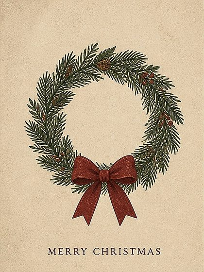
01 리스 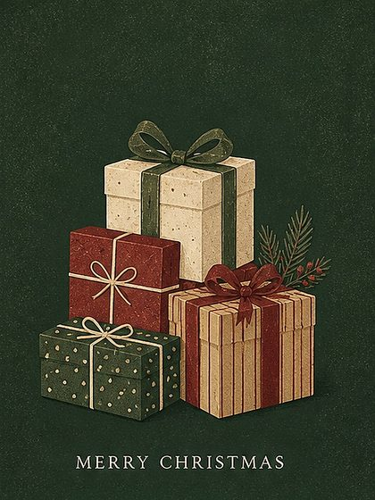
02 선물 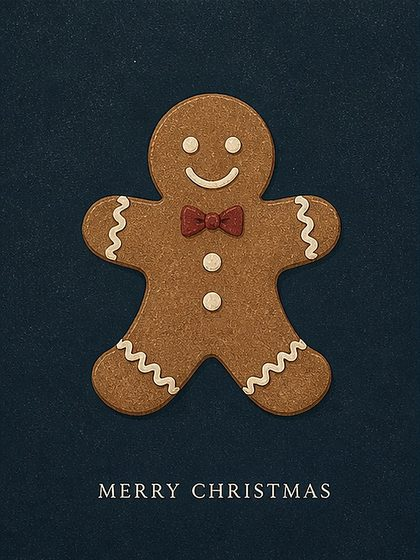
03 진저브레드 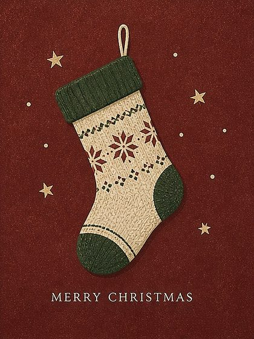
04 스타킹 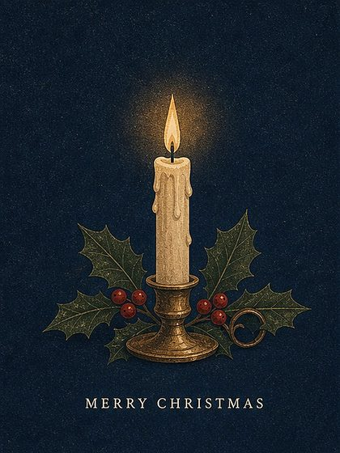
05 촛불 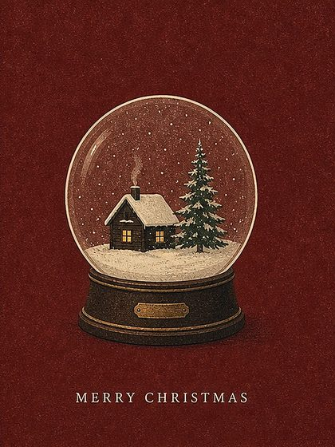
06 스노우볼 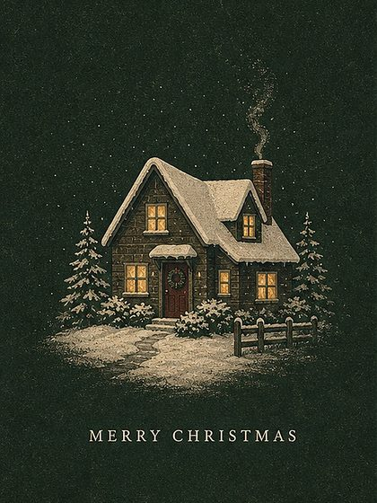
07 눈 내린 집 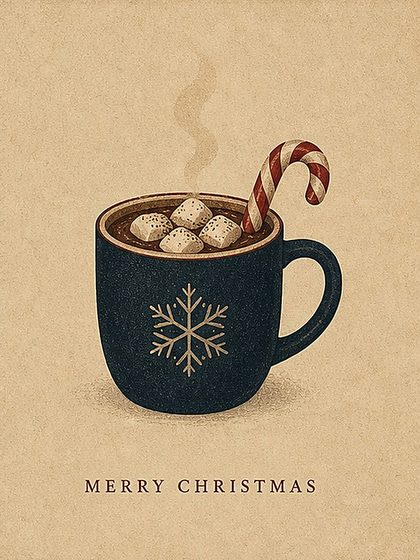
08 핫코코아 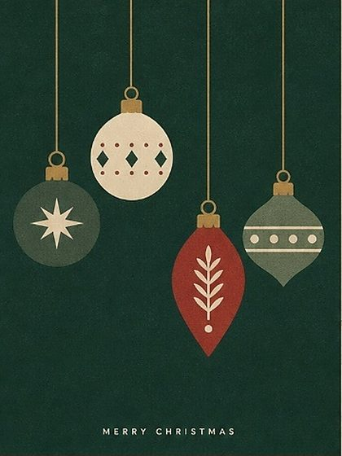
09 오너먼트 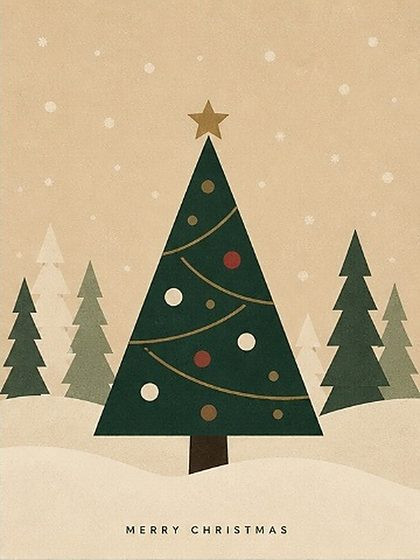
10 트리 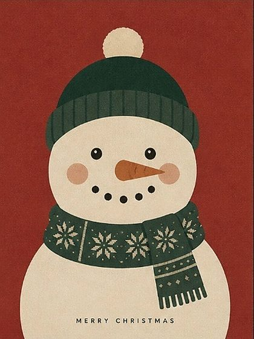
11 눈사람 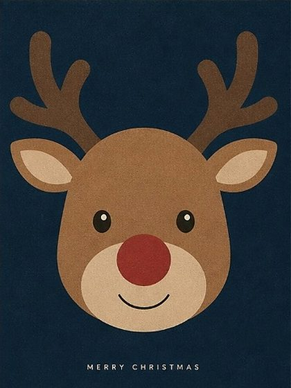
12 루돌프
이렇게 쓰세요
인쇄용 PDF 는 A4 1장에 4장씩 담겨 있어요. 3장만 뽑으면 12장이 모두 나옵니다.점선을 따라 자르면 엽서 1장(92×123mm)이 돼요. 여유 있게 잘라도 그림이 잘리지 않게 여백을 두었습니다.
낱장 JPG는 카톡·인스타로 보내거나, 집에 있는 사진 인화로 뽑을 때 쓰세요.
인쇄 팁 — 프린터 설정에서 용지 A4, 배율 100%(실제 크기) 로 뽑으면 배치가 딱 맞아요.
두꺼운 종이(120~200g)나 매트한 질감의 종이에 뽑으면 훨씬 예쁩니다.